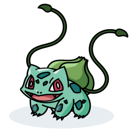
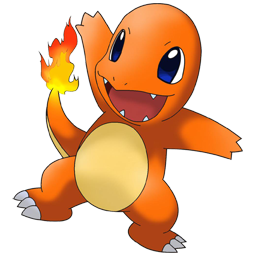

-
Historia do Pikachu
Pikachu

Pikachu é o Pokémon mais conhecido da série, sendo um dos protagonistas do anime de Pokémon. Foi o oitavo personagem de ficção mais lucrativo em 2002, segundo levantamento da revista Forbes.
O nome Pikachu vem da onomatopeia Pika-Pika, que significa "brilhar", "faiscar" e a onomatopeia chū, o som de um rato no Japão.
Pikachu são raramente agressivos e geralmente vivem em grupos, que, quando ameaçados, podem atacar o inimigo com uma produção de eletricidade e expulsá-lo, provocando fortes ferimentos se essa eletricidade for aplicada com uma grande energia.
Os Pikachu são amarelos e têm orelhas pontiagudas com pontas pretas. Eles têm também um rabo formando um raio com seu começo sendo marrom. A partir de Pokémon Diamond & Pearl, os rabos de Pikachu fêmeas apresentavam um corte em "V" na ponta do rabo. Sua característica fisica mais marcante são suas bochechas vermelhas, que funcionam como elétrodos e emitem eletricidade. -
Historia do Bulbasaur
Bulbasaur
Ele evolui para Ivysaur a partir do nível 16, e evolui para Venusaur a partir do nível 32.
Junto com Charmander e Squirtle, Bulbasauré um dos três Pokémon inicais de Kantodisponíveis no início de Pokémon Red e Blue/Green, FireRed e LeafGreen.
Bulbasaur é uma criatura quadrúpede réptil que lembra um pouco um sapo ou um dinossauro jovem, com um azul-verde manchado. Ele tem três dedos brancos ou garras crescendo fora de suas quatro pernas, e seus olhos são de um vermelho brilhante. A característica mais notável deste Pokémon é o bulbo de cebola na sua parte traseira, que cresce de uma semente em suas costas plantada por sua mãe ao nascer.
O Bulbo de Bulbasaur são partes de uma relação simbiótica que é benéfico para ambos. Isso permite que Bulbasaur obtenha um impulso maior da energia do sol durante o dia e a lâmpada permanecendo crescente e forte à noite. A lâmpada também contém muitas sementes de que retira os nutrientes.
Embora eles normalmente andem sobre quatro patas, um Bulbasaur pode se levantar sobre as patas traseiras. Quando ele evolui para Ivysaur, a lâmpada se torna um broto de flor maior, o que torna quase impossível para que ele se levante sobre as patas traseiras.
O bulbo em suas costas fica mais poderoso do que nunca quando este é exposto a luz solar. -
Historia do Charmander
Charmander
Charmander é um pokemon inicial, ou seja, você pode escolhê-lo na sua jornada inicial. E se tiver saco, no final, poderá até ter um Charizard, conhecido por ter sido um dos pokémons mais fortes que Ash já teve, mas ele deu pra uma guria lá. Charmander é do tipo fogo somente, também você queria que um largato vermelho com fogo no rabo fosse de planta? Seu número na pokédex é #4
Características:
seja, não é possível vê-lo perto de uma praia ou nadando na piscina de um clube. É razoavelmente forte, e é por isso que é um pokemon inicial, e mesmo assim a quantidade de Charmanders no mundo é rara. São bondosos e leais, mas na hora de briga, se revelam. Totalmente ineficazes contra pokemons aquáticos, que estão em cenários como praias, rios, e ginásios de água, enquanto que os pokemons de planta estão apenas em matinhos, fumando uma. O Charmander é totalmente compusivo, além de ter o espirito brincalhão de criança com 3 anos de idade que você repara só de olhar para a sua cara de retardado e os seus bracinhos levantados pro ár como se quisesse carinho, mas na verdade quer arranhar todo seu rosto ou no mínimo te deixar com um cheiro de enxofre, como se o seu cu fosse um vulcão em erupção.
Para evoluir um Charmander, é simples. Pegue um fósforo e risque nele. Se ele pegar fogo, evoluirá para o Charmeleon, ou então, morrerá carbonizado, no caso se você for bem noob igual ao Ash. Para evoluí-lo para o Charizard, empurre-o dentro de um vulcão. Ele pode morrer afogado, ou então, virar um Charizard. Charmander é de vez em quando confundido com uma lagartixa de fogo gigante mutante, pois tem formato de uma lagartixa de fogo gigante mutante. O fato é que Charmander desde de criança ja sofre com problemas de calvisse, e sofre com essa triste realidade que 90% dos senhores de idade brasileiros com 50 anos já sofrem - pelo menos o Charmander também não tem impotência. Além de terem cara de retardados, eles também são retardados: é comprovado que se um Charmander correr atrás do próprio rabo, acaba queimando a cara.
No animé, o Charmander aparece inúmeras vezes sendo usado por inúmeros guris retardados. O mais famoso dele, é claro, o Ash sempre escolhe Charmander quando vai enfrentar um Bulbasaur. Conta a lenda de sua mais famosa aparição, que com todos seus pokemons derrotados por um Squirtle, Ash jogou seu Charmander. Squirtle xingou a mãe de Charmander, que, possesso, digievoluiu e soltou barofadas de fogo em Squirtle. Não adiantou de nada, Ash perdeu, mas foi ao Centro Pokemon com mais um pokemon na pokedéx! Charmander assemelha-se a uma lagartixa, mas não consegue andar na parede e nem reconstitui sua cauda. Mas, se a chama em sua cauda for apagada, ele morreráperderá seus poderes de fogo. Por isso, ele nunca toma banho! Mas nenhum pokemon toma banho mesmo! Exemplo disso é a família de Mudkip, que é do tipo água e terra. Charmander é um ótimo pokemon contra pokemons da espécie grama.